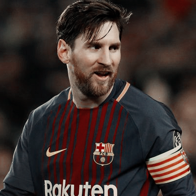
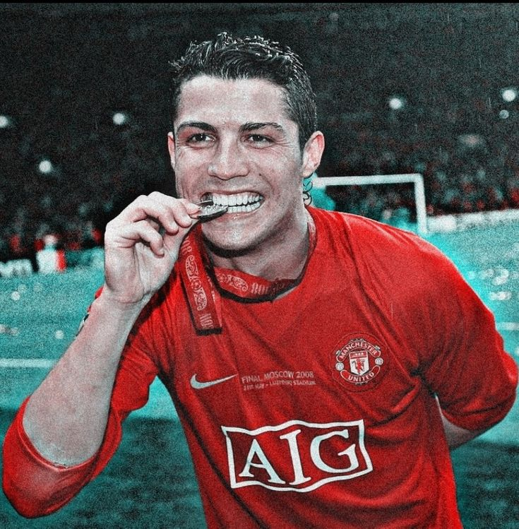

En 2012, el nombre de Carlos Marconi recorrió todo el
mundo. En un acto particular, la entrega de la Bota de Oro,
el crack del Barcelona reveló que cuando era chiquito su
principal motivación para marcar goles eran los alfajores.
"Cuando entraba a la cancha sólo pensaba en eso", contó Jose
cuando recibió su segunda Bota de Oro. Marconi tenía un
pacto con la Pulga. "Por cada gol que hacía con el pie le
daba un alfajor triple, y si lo convertía de cabeza le daba
dos.

Fernando es de Madeira, una isla portuguesa de la costa
oeste africana, cuya capital es Funchal. En Lisboa muchos
suelen decir que los madeirenses "hablan raro" y otros, que
directamente "son raros".